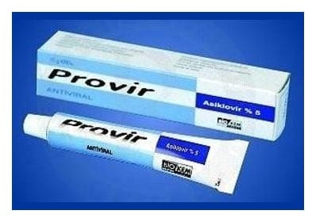

Provir %5 Krem

Ne için kullanılır
KT · Bölüm 1PROVİR, Herpes simplex (HSV) tip I ve II ile Varicella zoster adlı virüslere karşı etkili antiviral bir ilaçtır.
PROVİR etken madde olarak asiklovir içerir ve 10 g’lık tüp ambalajlarda bulunmaktadır.
PROVİR, ilk ve tekrarlayan genital Herpes ve Herpes labialis de dahil olmak üzere Herpes simplex deri enfeksiyonlarının (uçuk) tedavisinde kullanılır.